설비보전기사(구) (2020-08-22 기출문제)
1과목: 설비 진단 및 계측
1. 회전기계 이상 진단 방법 중 간이 진단법에서 판정기준이 아닌 것은?
- 상대판정
- 상태판정
- 상호판정
- 절대판정
(정답률: 51%)

2. 전류 검출용 센서로 사용되는 클램프형에 대한 설명으로 옳은 것은?
- 분류 저항기의 전압강하에 따라 전류를 검출하는 것이다.
- 간단한 구조로 직류와 교류를 검출할 수 있다.
- 피측정 전로와 절연이 되지 않기 때문에 고압전로 등에서는 안정성에 문제가 있다.
- 전로의 절단 없이 검출하는 방식으로 교류센서로 많이 사용된다.
(정답률: 64%)
3. 높은 주파수 특성을 지닌 트러블을 진단할 경우에 사용하는 척도는?
- 변위
- 속도
- 온도
- 가속도
(정답률: 53%)
4. 다음 설명과 관련된 것은?
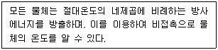
- 제백 효과
- 조셉슨 효과
- 패러데이 효과
- 슈테판-볼츠만의 효과
(정답률: 72%)
5. 비접촉형 변위 검출형 센서 종류에 해당되지 않는 것은?
- 서보형
- 와전류형
- 전자광학형
- 정전용량형
(정답률: 61%)
6. 음향출력 W의 무지향성 음원으로부터 r(m)만큼 떨어진 점에서의 음의 세기를 I라 하면, 음원이 자유공간에서 점음원(point source)인 경우의 음향출력 W와 음의 세기 I의 관계로 옳은 것은?
- W = I × πr
- W = I × 2πr
- W = I × 2πr2
- W = I × 4πr2
(정답률: 58%)
7. 회전기계의 질량 불평형 상태의 스펙트럼에서 가장 크게 나타나는 주파수 성분은?
- 1X
- 2X
- 3X
- 1.5X ~ 1.7X
(정답률: 65%)
8. 인간의 청감에 대한 보정을 하여 소리의 크기레벨에 근사한 값으로 측정할 수 있는 측정기는?
- 소음계
- 압력계
- 가속도 센서
- 스트레인 게이지
(정답률: 89%)
9. 저주파 차진이 좋으나, 공진 시 전달률이 매우 큰 단점이 있는 방진재는?
- 방진 스프링
- 파이버 글라스
- 천연고무 패드
- 네오프랜 마운트
(정답률: 64%)
10. 소음의 물리적 현상에서 둘 또는 그 이상의 같은 성질의 파동이 동시에 어느 한 점을 통과할 때 그 점에서의 진폭은 개개의 파동의 진폭을 합한 것과 같은 원리는?
- 중첩의 원리
- 도플러의 원리
- 청감 보정 원리
- 호이겐스의 원리
(정답률: 81%)
11. 온도를 측정할 수 없는 것은?
- 적외선 센서
- 방사형 온도계
- 서모커플 센서
- 자이로스코프 센서
(정답률: 80%)
12. 진동하는 동안 마찰이나 다른 저항으로 에너지가 손실되지 않는 진동은?
- 비감쇠 진동
- 실효값 진동
- 양진폭 진동
- 편진폭 진동
(정답률: 85%)
13. 진동의 발생과 소멸에 필요한 3대 요소는?
- 질량, 감쇠, 속도
- 질량, 강성, 감쇠
- 질량, 강성, 위상
- 질량, 위상, 감쇠
(정답률: 73%)
14. 액면이 높이가 h[m], 배관의 면적이 A[m2], 액체의 비중량이 γ[N/m3] 일 때 배관을 빠져나오는 유량 Q[m3/s]는? (단, g는 중력가속도[m/s2]이다.)
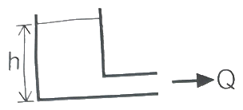
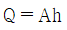
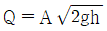
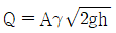
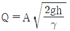
(정답률: 61%)
15. 용어와 기호의 연결이 틀린 것은?
- 등가소음도 - Leq
- 교통소음지수 - TNI
- 감각소음레벨 - PNL
- 음의 세기레벨 – PWL
(정답률: 61%)
16. 회전기계에서 고주파 진동에 해당되는 것은?
- 공동현상
- 압력맥동
- 언밸런스
- 미스얼라인먼트
(정답률: 70%)
17. 덕트(Duct)소음이나 배기소음을 방지하기 위해 사용되는 장치는?
- 모터
- 방진구
- 소음기
- 유도형 센서
(정답률: 84%)
18. 고속 회전기의 축 진동측정, 회전수 측정, 위치 측정 등에 사용되는 진동센서는?
- 동전형 속도 센서
- 서보형 가속도 센서
- 압전형 가속도 센서
- 와전류형 변위 센서
(정답률: 65%)
19. 진동측정용 센서로 사용되는 영구 자석형 속도 센서의 특징으로 틀린 것은?
- 감도가 안정적이다.
- 출력 임피던스가 낮다.
- 변압기 등 자장이 강한 장소에서 주로 사용된다.
- 다른 센서에 비해 크기가 크므로 자체 질량의 영향을 받는다.
(정답률: 65%)
20. 진동에 관한 설명으로 틀린 것은?
- 어떤 시스템이 외력을 받고 있을 때 야기되는 진동을 강제진동이라 한다.
- 진동계의 기본요소들이 모두 선형적으로 작동할 때 야기되는 진동을 선형진동이라 한다.
- 진동하는 동안 마찰이나 저항으로 인하여 시스템의 에너지가 손실되지 않는 진동을 감쇠진동이라 한다.
- 시스템을 외력에 의해 초기교란 후 그 힘을 제거하였을 때 그 시스템이 자유진동을 하는 진동수를 고유진동수라 한다.
(정답률: 76%)
2과목: 설비관리
21. 자주보전을 효과적으로 완성하기 위한 자주보전전개 스텝이 있다. 추진방법의 절차로 옳은 것은?
- 총점검 → 초기청소 → 발생원 곤란개소 대책 → 점검·급유 기준작성 → 자주점검 → 자주보전의 시스템화 → 자주관리의 철저
- 초기청소 → 점검·급유 기준작성 → 발생원 곤란개소 대책 → 자주점검 → 총점검 → 자주보전의 시스템화 → 자주관리의 철저
- 총점검 → 초기청소 → 점검·급유 기준작성 → 발생원 곤란개소 대책 → 자주점검 → 자주보전의 시스템화 → 자주관리의 철저
- 초기청소 → 발생원 곤란개소 대책 → 점검·급유 기준작성 → 총점검 → 자주점검 → 자주보전의 시스템화 → 자주관리의 철저
(정답률: 69%)
22. TPM에서의 설비종합효율을 계산하기 위해서 고려되어야 할 사항 중 가장 거리가 먼 것은?
- 양품율
- 로스율
- 시간가동률
- 성능가동률
(정답률: 53%)
23. 공장설비의 치공구 관리기능 중 계획단계에 해당되는 것은?
- 공구의 검사
- 공구의 제작 및 수리
- 공구의 설계 및 표준화
- 공구의 보관과 대출
(정답률: 77%)
24. 효율적인 열관리 방법에 관한 내용과 가장 거리가 먼 것은?
- 열 설비는 성능유지 및 향상을 위한 관리가 중요하다.
- 연료는 가격이 저렴하고 쉽게 확보 할 수 있어야 한다.
- 설비의 열사용 기준을 정해 열효율 향상을 도모해야 한다.
- 열관리의 효과를 높이기 위해서는 공장 간부와 일부 관계자 만에 의한 집중관리가 필요하다.
(정답률: 84%)
25. 예방보전 검사제도의 흐름을 나타낸 것으로 가장 적합한 것은?
- PM검사 표준 설정 → PM검사 계획 → PM검사 실시 → 수리 요구 → 수리 검수 → 설비 보전 기록
- PM검사 계획 → PM검사 표준 설정 → PM검사 실시 → 수리 요구 → 수리 검수 → 설비 보전 기록
- 수리 요구 → PM검사 계획 → PM검사 표준 설정 → PM검사 실시 → 수리 검수 → 설비 보전 기록
- 수리 요구 → 수리 검수 → PM검사 계획 → PM검사 표준 설정 → PM검사 실시 → 설비 보전 기록
(정답률: 62%)
26. 설비의 설계에 의한 이론 사이클 시간과 실제 사이클 시간과의 차이를 무엇이라 하는가?
- 고장 로스
- 속도 저하로스
- 순간 정지로스
- 수율 저하로스
(정답률: 79%)
27. 다음 중 수리공사에 대한 설명으로 틀린 것은?
- 정기수리공사는 정기수리계획에 의해서 하는 수리이다.
- 개수공사는 조업 상의 요구에 의해서 하는 개량공사이다.
- 사후수리공사는 설비검사를 하지 않는 생산설비의 수리이다.
- 보전개량공사는 제조의 부속설비의 공정, 사무, 연구, 시험, 복리, 후생 등의 수리이다.
(정답률: 59%)
28. 설비보전 조직형태 중 집중보전의 장점이 아닌 것은?
- 보전요원의 관리감독이 용이하다.
- 특수 기능자를 효과적으로 이용할 수 있다.
- 보전 작업에 필요한 인원의 동원이 용이하다.
- 긴급작업이나 새로운 작업 시 신속히 처리할 수 있다.
(정답률: 60%)
29. 설비관리기능 중 생산현장에서 보전 요원 또는 엔지니어의 보전 업무로서 점검, 검사, 주유, 작업변화에 대응 및 수리업무 등을 행하는 기능으로 가장 적합한 것은?
- 기술기능
- 관리기능
- 실시기능
- 지원기능
(정답률: 49%)
30. 제조능력의 요인은 크게 외적요인과 내적요인으로 나눌 수 있다. 다음 중 외적요인(제약요인)에 해당되지 않는 것은?
- 자재
- 노동
- 설비
- 자금
(정답률: 65%)
31. 선박 제조업, 건축업, 교량건설 등의 1회의 대규모 사업에 주로 이용되는 설비배치 방법은?
- 제품별 배치
- 공정별 배치
- 라인형 배치
- 제품 고정형 배치
(정답률: 73%)
32. 각종 기호법 중 뜻이 있는 기호법의 대표적인 것으로 기억이 편리하도록 항목의 첫 글자나, 그 밖의 문자를 기호로 표기하는 기호법는?
- 순번식 기호법
- 기억식 기호법
- 세구분식 기호법
- 십진 분류 기호법
(정답률: 82%)
33. 다음 중 만성로스의 특징으로 옳은 것은?
- 원인이 하나이며, 그 원인을 명확히 파악하기 쉽다.
- 원이도 하나, 원인이 될 수 있는 것도 하나이다.
- 복합 원인으로 발생하며, 그 요인의 조합이 불변이다.
- 원인은 하나이지만 원인이 될 수 있는 것이 수없이 많으며, 그때마다 바뀐다.
(정답률: 70%)
34. 신뢰도와 보전도를 종합한 평가 척도로 '어느 특정 순간에 기능을 유지하고 있는 확률'이라고 정의되는 것은?
- 유용성
- 경제성
- 특성요인성
- 평균가동성
(정답률: 76%)
35. 다음 중 설비의 경제성 평가방법과 가장 거리가 먼 것은?
- 비용비교법
- 평균 이자법
- MTBF 분석법
- 연평균 비교법
(정답률: 72%)
36. 품질개선 활동 중 공정에서 취한 계량치 데이터가 여러 개 있을 때 데이터가 어떤 값을 중심으로 어떤 모습으로 산포하고 있는가를 조사하는데 사용하는 그림은?
- 히스토그램
- 파레토도
- 관리도
- 산점도
(정답률: 76%)
37. TPM의 5가지 활동 중 보전이 필요 없는 설비를 설계하여, 가능한 빨리 설비의 안전가동을 위한 활동은 무엇인가?
- 계획보전체제의 확립
- 작업자의 자주보전체제의 확립
- 설비의 효율화를 위한 개선 활동
- MP설계와 초기 유동관리 체저의 확립
(정답률: 62%)
38. 현 제품의 판매량을 확대를 위한 프로젝트로, 양적인 확대를 위하여 생산설비, 유틸리티설비, 판매설비 등의 증설이나 확충하는 투자는?
- 확장 투자
- 제품 투자
- 합리적 투자
- 전략적 투자
(정답률: 68%)
39. 다음 보기의 내용과 가장 관계가 깊은 것은?
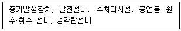
- 판매설비
- 사무용설비
- 유틸리티설비
- 연구개발설비
(정답률: 82%)
40. 계측기 선정방법을 설명한 것 중 가장 거리가 먼 것은?
- 계측목적에 대응해서 적합한 것을 선정
- 계측기의 설계자 및 디자이너를 보고 선정
- 여러 종류의 변수를 측정하기에 적합한 것을 선정
- 계측대상의 사용 조건, 환경 조건 등에 대해서 적당한 계측기를 선정
(정답률: 86%)
3과목: 기계일반 및 기계보전
41. 기어 전동장치에서 두 축이 평행한 기어는?
- 웜(worm) 기어
- 스큐(skew) 기어
- 스퍼(spur) 기어
- 베벨(bevel) 기어
(정답률: 71%)
42. 다음 강의 손상 중 표면피로에 의한 손상만으로 나열된 것은?
- 압연 항복, 균열, 버닝
- 스폴링, 스코링, 리프링
- 습동마모, 피닝 항복, 스코링
- 초기피칭, 파괴적 피칭, 스폴링
(정답률: 59%)
43. 배관용 재료에 대한 설명으로 틀린 것은?
- 스테인리스강 강관의 최고 사용온도는 650℃ ~ 800℃ 정도이다.
- 합금강 강관은 주로 고온용으로 150℃ ~ 650℃ 정도에서 사용한다.
- 동관은 고온에서 강도가 약하다는 결점이 있어 200℃ 이하에서 사용한다.
- 고압배관용 탄소강관은 고온에서도 강도가 유지되므로 800℃ 이상에서 사용한다.
(정답률: 64%)
44. 일반적인 용접에 대한 특징으로 틀린 것은?
- 저온 취성이 생길 우려가 없다.
- 재질의 변형 및 잔류 응력이 발생한다.
- 품질 검사가 곤란하고 변형과 수축이 생긴다.
- 용접사의 기량에 따라 용접부의 품질이 좌우된다.
(정답률: 71%)
45. 설비의 라이프 사이클에 걸쳐서 설비자체의 비용, 설비의 운전유지에 사용되는 제 비용, 설비의 열화손실과의 합계를 인하하는 것에 의해서 생산성을 높일 수 있는 보전방식은?
- 예방보전
- 사후보전
- 보전예방
- 생산보전
(정답률: 54%)
46. 압축기의 토출 배관에 관한 설명으로 틀린 것은?
- 드라이 필터는 압축기와 탱크사이에 설치한다.
- 토출 배관에는 흐름이 용이하도록 경사를 고려한다.
- 배관길이는 맥동을 방지하기 위해 공진길이를 피하여 배관해야 한다.
- 2대 이상의 압축기를 1개의 토출 관으로 배관 시 체크밸브와 스톱밸브를 설치한다.
(정답률: 62%)
47. 밸브의 종류와 용도를 짝지어 놓은 것 중 잘못된 것은?
- 글루브밸브 – 주로 교축용으로 사용한다.
- 슬루스밸브 – 전개, 전폐용으로 사용한다.
- 나비형밸브 – 차단용으로 많이 사용한다.
- 플랩밸브 – 스톱밸브 또는 역지밸브로 사용한다.
(정답률: 58%)
48. 구름 베어링에 예압을 주는 목적으로 가장 거리가 먼 것은?
- 베어링의 강성을 증가시킨다.
- 전동체 선회 미끄럼을 억제한다.
- 축의 흔들림에 의한 진동 및 이상음이 방진된다.
- 전동체의 공전 미끄럼이나 자전 미끄럼을 증가시킨다.
(정답률: 56%)
49. 다음 중 표면 경화 열처리 방법이 아닌 것은?
- 침탄법
- 질화법
- 오스템퍼링
- 고주파 경화법
(정답률: 58%)
50. 벨트식 무단변속기에 관한 설명으로 틀린 것은?
- 구동계통의 오염으로 인한 윤활불량에 유의한다.
- 가변피치 풀리가 유욕식이므로 정기적인 점검이 필요하다.
- 벨트와 풀리(Pully)의 접촉위치 변경에 의한 직경비를 이용한다.
- 무단변속에 사용되는 벨트의 수명은 일반적인 벨트보다 수명이 짧다.
(정답률: 49%)
51. 측정하려고 하는 양의 변화에 대응하는 측정기구의 지침의 움직임이 많고 적음을 가리키며 일반적으로 측정기의 최소눈금으로 표시하는 것은?
- 감도
- 정밀도
- 정확도
- 우연오차
(정답률: 69%)
52. 축이음 핀의 빠짐 방지나 볼트, 너트의 풀림방지로 쓰이는 것은?
- 코터
- 평행핀
- 분할핀
- 테이퍼핀
(정답률: 71%)
53. 다음 원통 커플링 중 주철제 원통 속에 두 축을 맞대어 끼어 키로 고정한 축 이음으로, 주로 축 지름과 하중이 작은 경우에 쓰이며 인장력이 작용하는 축 이음에 부적합한 것은?
- 머프 커플링
- 클램프 커플링
- 반겹치기 커플링
- 마찰 원통 커플링
(정답률: 48%)
54. 일반적인 고무 스프링의 특징으로 틀린 것은?
- 감쇠 작용이 커서 진동 및 충격흡수가 좋다.
- 인장력에 약하므로 인장하중을 피하는 것이 좋다.
- 한 개의 고무로 두 방향 또는 세 방향으로 동시에 작용할 수 있다.
- 기름에 접촉하거나 직사광선에 노출되어도 우수한 성능을 발휘한다.
(정답률: 76%)
55. 다음 중 공작기계의 구비조건이 아닌 것은?
- 가공능력이 좋아야 한다.
- 강성(rigidity)이 없어야 한다.
- 기계효율이 좋고, 고장이 적어야 한다.
- 가공된 제품의 정밀도가 높아야 한다.
(정답률: 81%)
56. 단상 유도 전동기에서 과열되는 원인으로 옳지 않은 것은?
- 냉각 불충분
- 빈번한 기동
- 서머 릴레이 작동
- 과부하(overload) 운전
(정답률: 71%)
57. 안지름이 750mm인 원형관에 양정이 50m, 유량 50m3/min의 물을 수송 하려한다. 여기에 필요한 펌프의 수동력은 약 몇 PS인가? (단, 물의 비중량은 1000 kg/m3 이다.)
- 325
- 555
- 750
- 800
(정답률: 58%)
58. 송풍기의 운전 중 점검 사항에 관한 내용으로 틀린 것은?
- 운전온도는 70℃ 이하로 한다.
- 댐퍼의 전폐 상태를 점검한다.
- 베어링의 진동 및 윤활유의 적정 여부를 점검한다.
- 베어링의 온도는 주위 공기 온도보다 40℃ 이상 높지 않게 한다.
(정답률: 55%)
59. 다음 중 탭(tap)의 파손 원인으로 틀린 것은?
- 탭이 경사지게 들어간 경우
- 3번 탭으로 최종 다듬질 할 경우
- 구멍이 너무 작거나 구부러진 경우
- 막힌 구멍의 밑바닥에 탭의 선단이 닿았을 경우
(정답률: 78%)
60. 액상 개스킷의 사용방법으로 틀린 것은?
- 얇고 균일하게 칠한다.
- 바른 직후 접합해서는 안 된다.
- 접합면에 수분 등 오물을 제거한다.
- 사용온도 범위는 대체적으로 40℃ ~ 400℃ 정도이다.
(정답률: 78%)
4과목: 윤활관리
61. 공기 압축기에서 윤활에 큰 영향을 미치는 요소로 맞는 것은?
- 첨가제
- 열과 물
- 압력과 용량
- 유동점가 인화점
(정답률: 71%)
62. 그리스의 시험방법에 관한 내용이다. ( ) 안에 알맞은 내용은?
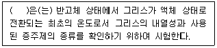
- 점도
- 적점
- 주도
- 이유도
(정답률: 74%)
63. 다음 중 비순환 급유방법이 아닌 것은?
- 손 급유법
- 적하 급유법
- 바늘 급유법
- 유욕 급유법
(정답률: 65%)
64. 베어링의 마찰 면이 일정치 않은 상황에서 국부적인 고하중이 걸릴 때 작용하는 윤활유의 기능은?
- 밀봉 작용
- 세정 작용
- 응력 분산 작용
- 마찰 감소 작용
(정답률: 70%)
65. 그리스를 장시간 사용하지 않고 방치해 놓거나 사용과정에서 오일이 그리스로부터 이탈되는 현상은?
- 주도
- 이유도
- 동점도
- 수세내수도
(정답률: 79%)
66. 윤활관리의 실시 방법 중 급유 관리에 속하지 않는 것은?
- 저점도유 사용으로 누유방지
- 올바른 급유량과 급유간격의 결정
- 점검을 통한 급유관의 누설여부 관리
- 급유구 및 급유통에 이물질 혼입 방지
(정답률: 75%)
67. 윤활유가 유화되는 원인으로 가장 거리가 먼 것은?
- 수분과의 접촉이 없을 경우
- 기름의 산화가 상당히 일어났을 경우
- 운전 조건이 가혹해서 탄화수소분의 변질을 가져왔을 경우
- 윤활유가 열화하여 이물질분이 증가되어 고점도유에 되었을 경우
(정답률: 76%)
68. 윤활유가 열화 할 때 나타나는 현상으로 가장 거리가 먼 것은?
- 점도가 변화한다.
- 산가가 증가한다.
- 색상이 변화한다.
- 슬러지가 감소한다.
(정답률: 76%)
69. 윤활유의 기유로 사용되는 파라핀계 기유를 설명한 내용 중 틀린 것은?
- 휘발성은 나프텐계 기유보다 낮다.
- 점도지수가 나프텐계 기유보다 낮다.
- 산화저항성이 나프텐계 기유보다 높다.
- 인화점, 유동점이 나프텐계 기유보다 높다.
(정답률: 59%)
70. 윤활유의 열화를 방지하기 위한 방법으로 틀린 것은?
- 고온을 가능한 피한다.
- 협잡물 혼입 시는 신속히 제거한다.
- 신기계 도입 시 충분한 세척을 한 후 사용한다.
- 윤활유 교환 시 열화유와 새로운 오일을 섞어서 교환한다.
(정답률: 80%)
71. 오일을 규정조건으로 가열하여 발생한 증기에 불꽃을 접근시켰을 때 순간적으로 불이 붙는 온도는?
- 인화점
- 발연점
- 착화점
- 연소점
(정답률: 72%)
72. 윤활유의 적정 점도를 선정하려고 할 때 고려사항으로 가장 거리가 먼 것은?
- 운전속도
- 운전온도
- 운전하중
- 윤활유의 수명
(정답률: 71%)
73. 기어의 이면손상 중 재질의 결함이나 과도한 하중 등에 의한 것으로 피팅과 같이 이면의 국부적인 피로 현상에서 나타나지만 피팅보다 약간 큰 불규칙한 형상의 박리를 발생하는 현상은?
- 버닝
- 부식
- 스폴링
- 리플링
(정답률: 68%)
74. 다음 중 그리스 윤활의 특징으로 틀린 것은?
- 유동성이 나쁘기 때문에 누설이 적다.
- 냉각효과가 커서 온도상승 제어가 쉽다.
- 흡착력이 강하므로 고하중에 잘 견딘다.
- 기계의 설계가 간편하고 비용이 적게 든다.
(정답률: 72%)
75. 윤활관리를 실시하는 목적 중 가장 거리가 먼 것은?
- 설비의 수명 연장
- 기계 설비의 가동률 증대
- 동력비의 절감과 생산량 증대
- 설비의 성능향상과 윤활비용 증대
(정답률: 74%)
76. 윤활유 열화에 미치는 인자 중 윤활유를 사용할 때 공기 중의 산소를 흡수하여 화학적 반응을 일으키는 것은?
- 희석
- 유화
- 산화
- 이물질 혼입
(정답률: 80%)
77. 윤활유의 성질을 강화하기 위해 첨가하는 첨가제의 일반적인 성질로 틀린 것은?
- 증발이 많아야 한다.
- 기유에 용해도가 좋아야 한다.
- 다른 첨가제와 잘 조화되어야 한다.
- 첨가제는 수용성 물질에 녹지 않아야 한다.
(정답률: 78%)
78. 다음 정유 공정 중 원유 중에 포함된 염분을 제거하는 탈염 장치와 같은 전처리 과정을 거친 후 가열된 원유를 상압 증류탑으로 보내어 가벼운 성분부터 무거운 성분으로 분리하는 공정은?
- 정제 공정
- 배합 공정
- 증류 공정
- 기유 공정
(정답률: 64%)
79. 윤활 장치의 고장 원인 중 윤활유에 의한 원인이 아닌 것은?
- 부적정유의 사용
- 오일의 열화와 오염
- 급유 방법의 부적당
- 이종유의 혼합 사용
(정답률: 62%)
80. 일반적인 베어링 윤활의 목적에 대한 설명으로 틀린 것은?
- 금속류의 직접 접촉에 의한 소음을 막는다.
- 윤활유의 사용으로 먼지 또는 이물질의 침입을 방지한다.
- 베어링의 마모를 막고 윤활유의 냉각효과로 수명을 연장시킨다.
- 마모를 적게 하여 동력손실을 높이고 마찰에 의한 발열을 증가시킨다.
(정답률: 80%)
5과목: 공유압 및 자동화
81. 다음 유압 회로도에서 ⓐ기기의 역할로 옳은 것은?
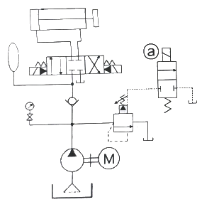
- 회로 내 발생되는 서지 압력을 흡수한다.
- 기계 정지시간에 유압유를 탱크로 언로드 시킨다.
- 실린더의 전진 완료 후, 클램프 압력을 유지한다.
- 실린더 전·후진 시 속도를 일정하게 제어한다.
(정답률: 57%)
82. 곧고 긴 유압배관의 유동에 의한 압력손실 수두를 구하는 식은?
- 연속방정식
- 프란틀(Prandtl)식
- 블라시우스(Blasius)식
- 달시-바이스바하(Darcy-Weisbach)식
(정답률: 62%)
83. 공유압 기기에 관한 설명이 틀린 것은?
- 감압밸브 : 2차 측의 압력을 일정하게 한다.
- 셔틀밸브 : 안전장치, 검사기능, 연동제어에 사용된다.
- 압력 스위치 : 공기 압력신호를 전기신호로 변환한다.
- 시퀀스 밸브 : 액추에이터의 동작을 정해진 순서에 따라 작동시킨다.
(정답률: 59%)
84. 다음 그림과 같이 실린더 튜브 내에 자석이 설치되어 있고 실린더 외부에도 환형의 자석이 설치되어 자력 커플링으로 결속된 환형의 몸체가 실린더 튜브를 따라 이송할 수 있는 실린더는?
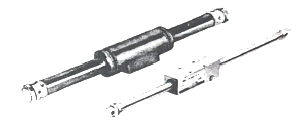
- 충격 실린더
- 탠덤 실린더
- 로드리스 실린더
- 양로드형 실린더
(정답률: 63%)
85. 다음 중 설비의 가동률 저하에 가장 큰 영향을 미치는 것은?
- 설비의 자동화 방식에 따른 효율
- 설비의 고장정지에 의한 가동중지
- 설비의 작업조건에 따른 운전특성
- 설비의 제어방식에 따른 연산처리
(정답률: 77%)
86. 변압기유의 요구사항으로 옳은 것은?
- 산화가 잘될 것
- 절연 내력이 작을 것
- 점도가 낮고 비열이 클 것
- 인화점과 응고점이 낮을 것
(정답률: 63%)
87. 공유압 장치의 전기 시퀀스 제어회로를 설계할 때 고려사항으로 틀린 것은?
- 대상시스템의 동작순서는 고려하지 않는다.
- 비용, 설비 관리자의 수준이 고려되어야 한다.
- 설계 전 충분히 대상시스템을 파악해야 한다.
- 설계절차에 따라 순차적으로 진행되어야 한다.
(정답률: 77%)
88. 다음 자동화 장치의 기본적인 구성 중 입력되는 제어 신호를 분석·처리하여 필요한 제어 명령을 내려주는 곳은?
- 센서(sensor)
- 프로그램(program)
- 액추에이터(actuator)
- 시그널 프로세서(sigmal processor)
(정답률: 60%)
89. 압력에 관한 설명으로 틀린 것은?
- 진공도는 항상 절대압력으로 나타낸다.
- 절대압력 = 계기압력 + 표준 대기압이다.
- 절대진공도 = 표준대기압 + 진공계압력이다.
- 대기압보다 높으면 정압, 낮으면 부압이라 한다.
(정답률: 50%)
90. 유체의 흐름에서 난류와 층류를 구별할 때 사용하는 것은?
- 점도 지수
- 동점도 계수
- 레이놀즈 수
- 체적 탄성 계수
(정답률: 68%)
91. 핸들링의 정의로 옳은 것은?
- 소재에 소정의 치수, 형상, 정도, 성능 등을 부여하는 공정이나 작업
- 두 개 이상의 부품에서 1개의 반제품 또는 제품을 만드는 공정이나 작업
- 완성된 제품이나 프로세스가 정해진 목적에 합치하는가를 확인하는 공정이나 작업
- 물체를 외관적으로 변화시키지 않고 필요한 때에 필요한 장소에 이동, 운반, 저장, 보관시키는데 관련된 공정이나 작업
(정답률: 70%)
92. 공기 압축기 토출부 직후에 설치하여 공기를 강제적으로 냉각시켜 공기압 관로 중의 수분을 분리·제거하는 기기는?
- 냉각기
- 드레인 분리기
- 메인 라인 필터
- 오일 미스트 세퍼레이터
(정답률: 73%)
93. 용적형 유압펌프가 아닌 것은?
- 기어 펌프
- 베인 펌프
- 터빈 펌프
- 왕복동 펌프
(정답률: 63%)
94. 실린더의 설치 시 요동이 허용되는 방법은?
- 풋형
- 나사형
- 플랜지형
- 트러니언형
(정답률: 55%)
95. 자동화의 기본 요소가 아닌 것은?
- 감지장치
- 작동장치
- 저장장치
- 제어장치
(정답률: 75%)
96. 공동현상을 방지할 목적으로 펌프 흡입구 또는 유압 회로의 부(-)압 발생 부분에 사용하여 일정 압력 이하로 내려가면 포핏이 열려 압유를 보충하도록 하는 밸브는?
- 감속 밸브
- 압력 제어 밸브
- 흡입형 체크 밸브
- 카운터 밸런스 밸브
(정답률: 52%)
97. 다음 공기압회로에서 입력 A와 B에 대한 출력 Y의 동작과 같은 논리회로는?
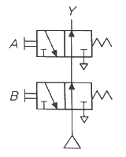
- AND
- NOR
- NOT
- NAND
(정답률: 48%)
98. O링의 구비조건으로 틀린 것은?
- 내유성이 좋을 것
- 내마모성이 좋을 것
- 사용 온도 범위가 넓을 것
- 압축 영구 변형이 많을 것
(정답률: 77%)
99. 유압펌프 토출 유량의 직접적인 감소원인으로 적절하지 않은 것은?
- 공기의 흡입이 있다.
- 작동유의 점성이 너무 높다.
- 작동유의 점성이 너무 낮다.
- 유압 실린더 속도가 빨라졌다.
(정답률: 60%)
100. 조작하고 있는 동안만 열리는 접점으로 조작전에는 항상 닫혀있는 접점은?
- a접점
- b접점
- c접점
- d접점
(정답률: 67%)
간이 진단법에서는 회전기계의 진동, 소음, 온도, 진폭 등의 상태를 측정하여 이상 여부를 판정합니다. 이 중에서 "상태판정"은 판정 기준이 아니라 상태를 측정하는 방법 자체를 의미합니다. 따라서 이는 간이 진단법에서 판정 기준이 아닙니다.
반면에 "상대판정", "상호판정", "절대판정"은 모두 회전기계의 상태를 측정하여 이상 여부를 판정하는 기준이 될 수 있습니다. "상대판정"은 기준치와 비교하여 이상 여부를 판정하는 방법, "상호판정"은 같은 종류의 기계끼리 비교하여 이상 여부를 판정하는 방법, "절대판정"은 정해진 기준치에 따라 이상 여부를 판정하는 방법입니다.